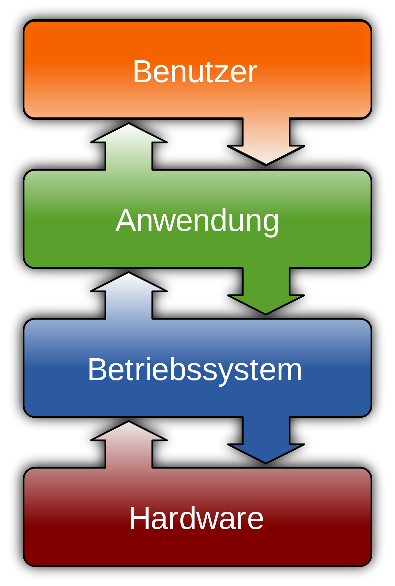

Was versteht man unter einem Betriebssystem?
Als Kurzformen werden BS (Betriebssystem) und OS (Operating System) verwendet. Ein Betriebssystem verwaltet das Zusammenspiel der Hardware- und Software-Komponenten eines Computers, sodass dieser mit einer benutzerfreundlichen Oberfläche verwendet werden kann. Das Betriebssystem ist dabei die Schnittstelle zwischen dem Nutzer, der einen Befehl in den Computer eingeben möchte, und den Bestandteilen eines Computers, die den Befehl umsetzen. Es ist daher für die Funktionstüchtigkeit eines Computers unverzichtbar.
Was sind die Aufgaben eines Betriebssystems?
Benutzerkommunikation: Das Betriebssystem ermöglicht die Interaktion zwischen dem Benutzer und dem Computer. Es stellt eine Benutzeroberfläche bereit, über die Befehle eingegeben und Ergebnisse angezeigt werden können.
Programmverwaltung: Das Betriebssystem ist verantwortlich für das Laden, Ausführen, Unterbrechen und Beenden von Programmen. Es stellt sicher, dass jedes Programm die Ressourcen erhält, die es benötigt, und dass Programme nicht in Konflikt miteinander geraten.
Prozessorverwaltung: Das Betriebssystem verwaltet die Prozessorzeit und stellt sicher, dass alle laufenden Prozesse angemessen bedient werden.
Speicherverwaltung: Das Betriebssystem ist verantwortlich für die Verwaltung des internen Speicherplatzes. Es weist jedem Programm einen bestimmten Speicherbereich zu und sorgt dafür, dass Programme nicht in den Speicherbereich anderer Programme eingreifen.
Geräteverwaltung: Das Betriebssystem verwaltet und betreibt die an den Computer angeschlossenen Geräte. Es lädt die entsprechenden Treiber und stellt sicher, dass die Geräte ordnungsgemäß funktionieren.
Schutzfunktionen: Das Betriebssystem bietet Schutzfunktionen, um die Sicherheit und Integrität des Systems zu gewährleisten. Dazu gehören Zugriffsbeschränkungen und andere Sicherheitsmaßnahmen.
Diese Aufgaben ermöglichen es dem Betriebssystem, als Vermittler zwischen der Hardware des Computers und den Anwendungen zu fungieren, die auf dem Computer ausgeführt werden. Es stellt sicher, dass der Computer effizient und sicher arbeitet.
Welche Betriebssysteme gibt es?